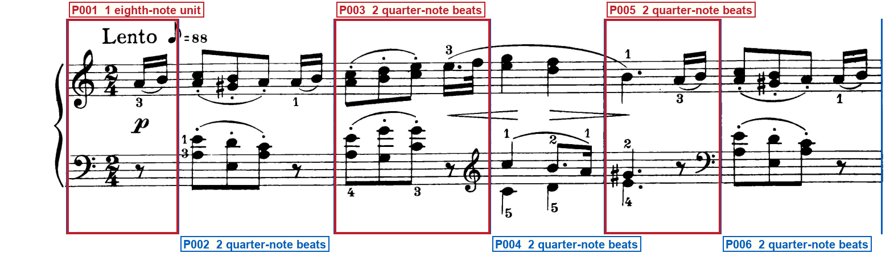
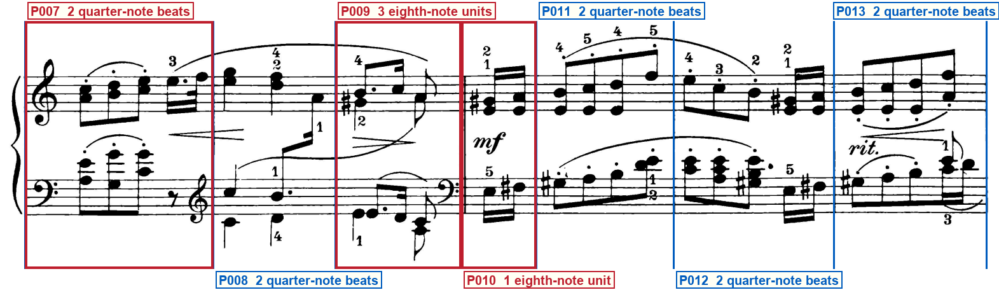
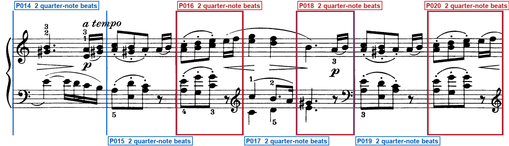
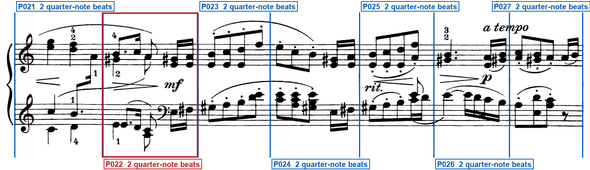
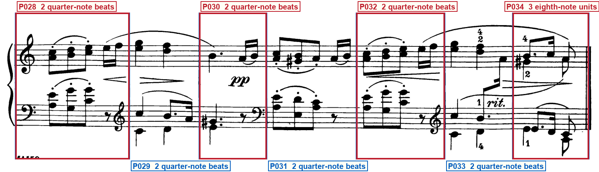

Printed-frame check
schumann_op68_06_the_poor_orphan
Blue regions are silent: verify that they are ordinary bars. Red regions have one compact label directly below their system. Blue vertical lines must sit on printed barlines. Labels must remain outside the music.
System 1 — 6 printed regions

- P001 — OPENING SIGNATURE · PICKUP — At the left of system 1 · Before the first complete barline
- P003 — CLEF CHANGE — Immediately left of the right barline · staff 2: bass clef → treble clef; glyph Immediately left of the P003/P004 barline on the lower staff; effective P004; first governed event: The left-hand C4 (one ledger below the staff) and C5 at the start of P004, printed in treble
- P005 — CLEF CHANGE — Immediately left of the right barline · staff 2: treble clef → bass clef; glyph Immediately left of the P005/P006 barline on the lower staff; effective P006; first governed event: The left-hand C4 and E4 at the start of P006, printed in bass
System 2 — 7 printed regions

- P007 — CLEF CHANGE — Immediately left of the right barline · staff 2: bass clef → treble clef; glyph Immediately left of the P007/P008 barline on the lower staff; effective P008; first governed event: The left-hand C4 (one ledger below the staff) and C5 at the start of P008, printed in treble
- P009 — PARTIAL BAR · DOUBLE BARLINE · SECTION BOUNDARY · CLEF CHANGE — Before the thin-thin double bar · At the right barline · At the section double bar · Immediately left of the double bar · staff 2: treble clef → bass clef; glyph Immediately left of the P009/P010 thin-thin section double bar on the lower staff; effective P010; first governed event: The two sixteenths E3 then F-sharp3 of P010, after the double bar, printed in bass
- P010 — PARTIAL BAR — After the section double bar
System 3 — 7 printed regions

- P016 — CLEF CHANGE — Immediately left of the right barline · staff 2: bass clef → treble clef; glyph Immediately left of the P016/P017 barline on the lower staff; effective P017; first governed event: The left-hand C4 (one ledger below the staff) and C5 at the start of P017, printed in treble
- P018 — CLEF CHANGE — Immediately left of the right barline · staff 2: treble clef → bass clef; glyph Immediately left of the P018/P019 barline on the lower staff; effective P019; first governed event: The left-hand C4 and E4 at the start of P019, printed in bass
- P020 — CLEF CHANGE · CAUTIONARY CLEF — Immediately left of the system barline · At the right end of system 3 · staff 2: bass clef → treble clef; glyph Immediately left of the system-3 right barline on the lower staff; effective P021; first governed event: The left-hand C4 (one ledger below the staff) and C5 at the start of P021, printed in treble
System 4 — 7 printed regions

- P022 — CLEF CHANGE — After the left-hand A3+C4 eighth, before the last eighth · staff 2: treble clef → bass clef; glyph Mid-bar on the lower staff of P022, after the A3+C4 eighth and before the last eighth; effective P022; first governed event: The two sixteenths E3 then F-sharp3 inside P022, after the bass-clef glyph and before the right barline
System 5 — 7 printed regions

- P028 — CLEF CHANGE — Immediately left of the right barline · staff 2: bass clef → treble clef; glyph Immediately left of the P028/P029 barline on the lower staff; effective P029; first governed event: The left-hand C4 (one ledger below the staff) and C5 at the start of P029, printed in treble
- P030 — CLEF CHANGE — Immediately left of the right barline · staff 2: treble clef → bass clef; glyph Immediately left of the P030/P031 barline on the lower staff; effective P031; first governed event: The left-hand C4 and E4 at the start of P031, printed in bass
- P032 — CLEF CHANGE — Immediately left of the right barline · staff 2: bass clef → treble clef; glyph Immediately left of the P032/P033 barline on the lower staff; effective P033; first governed event: The left-hand C4 (one ledger below the staff) and C5 at the start of P033, printed in treble
- P034 — PARTIAL BAR · FINAL BARLINE — Last printed region · Thin-plus-thick barline at the right
Full clef inventory
Upper staff opens in treble and lower staff in bass. Eleven later left-hand clef changes are printed and listed; system-start reprints are not additional changes; no other clef glyphs are visible.
Opening clefs
- Staff 1: treble clef — Opening of system 1, upper staff, left of the 2/4 pickup
- Staff 2: bass clef — Opening of system 1, lower staff, left of the 2/4 pickup
Printed clef changes (11)
- P003, staff 2: treble clef — P003, staff 2: bass clef to treble clef immediately left of the right barline
- P005, staff 2: bass clef — P005, staff 2: treble clef to bass clef immediately left of the right barline
- P007, staff 2: treble clef — P007, staff 2: bass clef to treble clef immediately left of the right barline
- P009, staff 2: bass clef — P009, staff 2: treble clef to bass clef immediately left of the section double bar
- P016, staff 2: treble clef — P016, staff 2: bass clef to treble clef immediately left of the right barline
- P018, staff 2: bass clef — P018, staff 2: treble clef to bass clef immediately left of the right barline
- P020, staff 2: treble clef — P020, staff 2: bass clef to cautionary treble clef at the end of system 3
- P022, staff 2: bass clef — P022, staff 2: treble clef to bass clef mid-bar before the last eighth
- P028, staff 2: treble clef — P028, staff 2: bass clef to treble clef immediately left of the right barline
- P030, staff 2: bass clef — P030, staff 2: treble clef to bass clef immediately left of the right barline
- P032, staff 2: treble clef — P032, staff 2: bass clef to treble clef immediately left of the right barline
Verifier notes and special checks
One page, five grand staves, thirty-four printed regions in 2/4 with no key signature. P001 is an opening one-eighth pickup: slurred right-hand A4 sixteenth to B4 sixteenth against a left-hand eighth rest, with treble over bass and 2/4. P009 is three eighth-note units before a thin-thin section double bar with no repeat dots; P010 is one eighth-note unit after that bar, two printed sixteenths. P034 is three eighth-note units before the thin-plus-thick final barline. Both staves open treble over bass. Eleven later left-hand clef glyphs are printed: treble at the ends of P003, P007, P016, P028 and P032; bass at the ends of P005, P009, P018 and P030; a cautionary treble at the end of P020; and a mid-bar bass inside P022 after the left-hand A3+C4 eighth, first governing E3 then F-sharp3 sixteenths. System-start clefs are reprints, including the system-4 left-hand treble reprint of the P020 cautionary. Geometry, capacities, and previous/first-event strings match the print and the proposed lock.
- System 1 P001: Is the opening region a one-eighth pickup of slurred A4-B4 sixteenths against a left-hand eighth rest? Yes. Right hand A4 on the second space to B4 on the middle line, double beam and slur; left hand eighth rest; 2/4 on both staves.
- System 2 P009/P010: Does a thin-thin double bar split a 2/4 bar into three eighths then one eighth, and are there repeat dots? Yes, three eighths then one eighth. No repeat dots on either staff.
- System 4 P022: Is the left-hand bass clef mid-bar after an A3+C4 eighth, with first new-clef notes E3 then F-sharp3 sixteenths still inside P022? Yes. Glyph sits after the A3+C4 eighth and before the last eighth; those two sixteenths are left of the barline at x=527.
- System 5 P034: Is the last region three eighths with a thin-plus-thick final barline and no repeat dots? Yes. Same dotted-eighth cadence shape as P009, then the final barline.
Your verification checks
- Do all staves, notes, rests, slurs and other musical marks fit completely inside the page?Expected: Yes
- Do the blue lines match every printed barline, giving 34 printed regions?Expected: Yes
- Do the compact red labels state every visible repeat, ending, route mark, special barline, partial, meter/key change and clef change—and are all unlabeled blue regions truly normal?Expected: Yes
- Are all region labels outside the printed system, with no ending, repeat, clef, note or mark hidden?Expected: Yes
- Does the clef list state each opening clef and every visible clef change?Expected: Yes
Approve only after every answer is Yes. Tell the Orchestrator: Frame approved or Frame rejected with the system number.